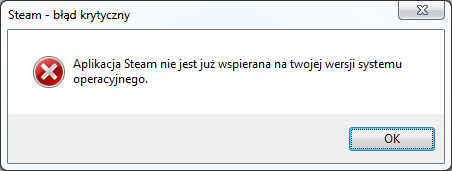
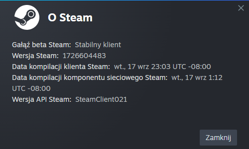

Steam on Windows 7
Continuing to use Steam after Valve's EOLStep 1: Installing Steam
As the name suggests, the first step is to officially install Steam from Valve's site.After letting it download and install everything it needs to though, you'll only see an error about OS compatibility:

This can be fixed by telling Steam to download an older client, the last Windows 7 one.
You may be tempted to just enable VxKex, but DO NOT DO IT! It will break running some games, some can be fixed with VxKex, some can't. The last Windows 7 client uses the latest Steam API anyways, so there's no reason to do so.
Step 2: Downloading the Windows 7 client
Open a command prompt window in the Steam folder, and run the following command:steam -forcesteamupdate -forcepackagedownload -overridepackageurl http://web.archive.org/web/20240918104445if_/media.steampowered.com/client -exitsteam -textmode(you may need to run
steam -clearbeta beforehand)You will see a client update window, just like before. This time, it will download the Windows 7 client.
After that, you can open Steam and see it works.
